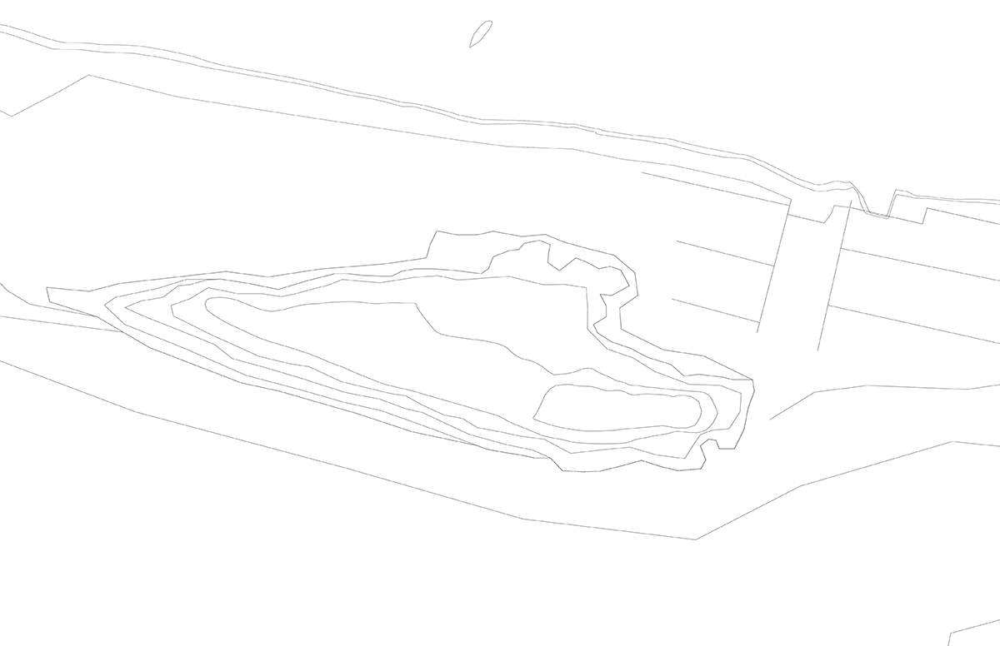
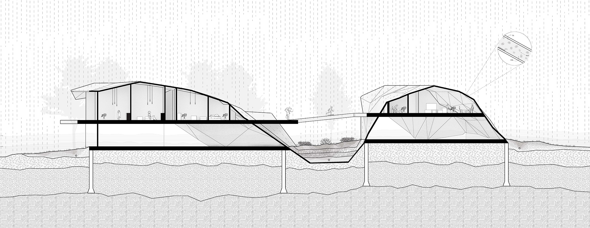
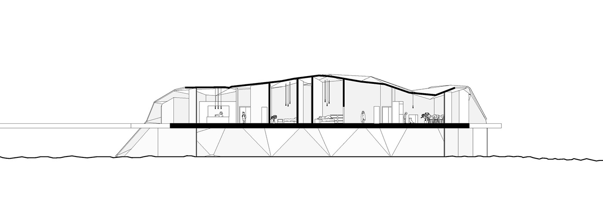
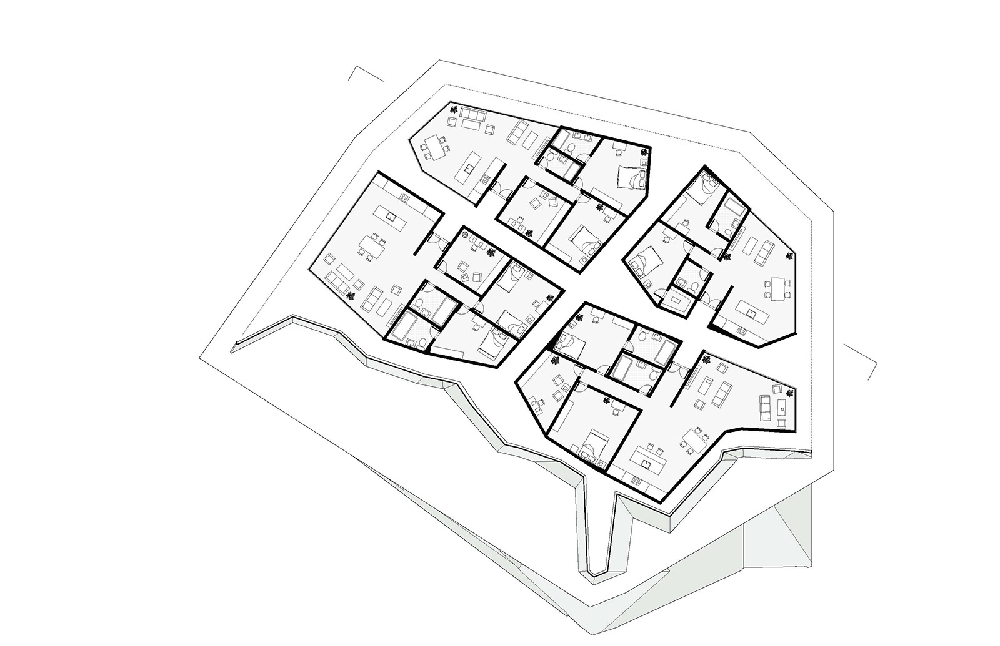
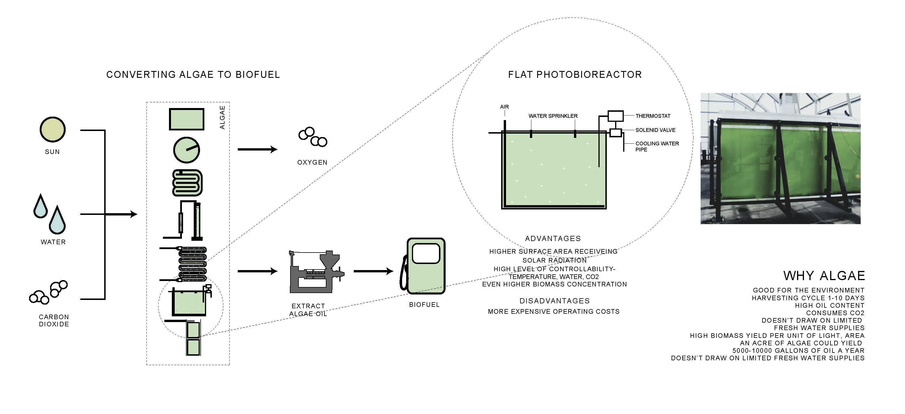
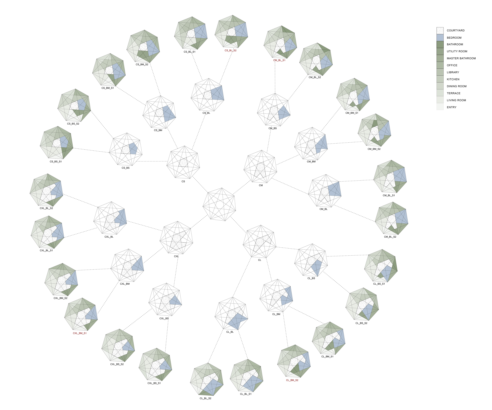
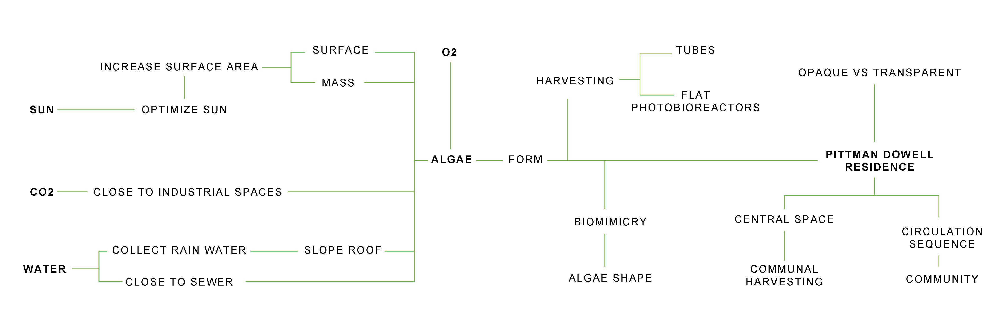

WHAT: WATER COMMUNITY LOCATION: SIX MILE ISLAND, PITTSBURGH, PA
WHEN: SEPTEMBER-DECEMBER 2018 PROFESSORS: DANA CUPKOVA, NINA CHASE
An experimental living experience that addresses the carbon air and water pollution in Pittsburgh (Allegheny River) by introducing a facade system of algae cultivation as a renewable resource to filter out the toxins and generate biofuel to power housing needs.

01 FLOW MAP (CIRCLES INDICATE CARBON POLLUTION/DOTS INDICATE FLOOD PLAIN)

02 ECOLOGICAL MORPHOLOGY
The site plan is generated first by mapping out the carbon air pollution in the area (the density of lines) and dividing up the island based on zones of pollution. Since algae thrives off carbon and needs it to grow, zones of most pollution get the largest areas.

03 SITE SECTION AND SITE PLAN
The island itself would be populated by plants and bioswales between the buildings to absorb and filter flood water and rain water, especially since the island is located right next to a sewage outfall.

04 SYSTEMS SECTION
The island itself would be populated by plants and bioswales between the buildings to absorb and filter flood water and rain water, especially since the island is located right next to a sewage outfall.

05 UNIT SECTION

06 UNIT PLAN

07 FORM MAKING
RESEARCH

08 ALGAE RESEARCH

09 EXPLORATION OF PROGRAM SIZES AND CIRCULATION BASED ON THE PITTMAN DOWELL RESIDENCE

10 MIND MAP COMBINING LOGICS OF ALGAE GROWTH AND PROGRAM TO INFLUENCE ARCHITECTURE